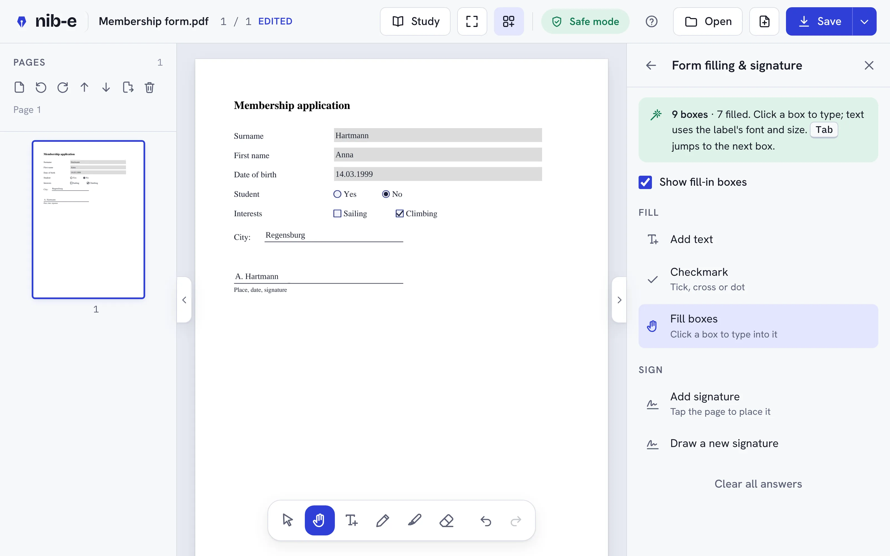
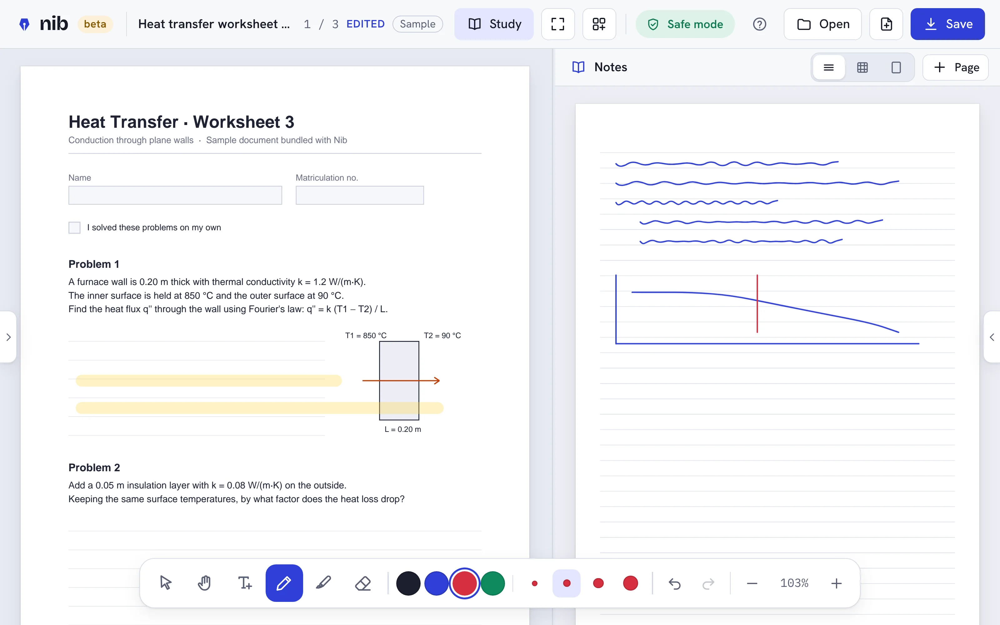
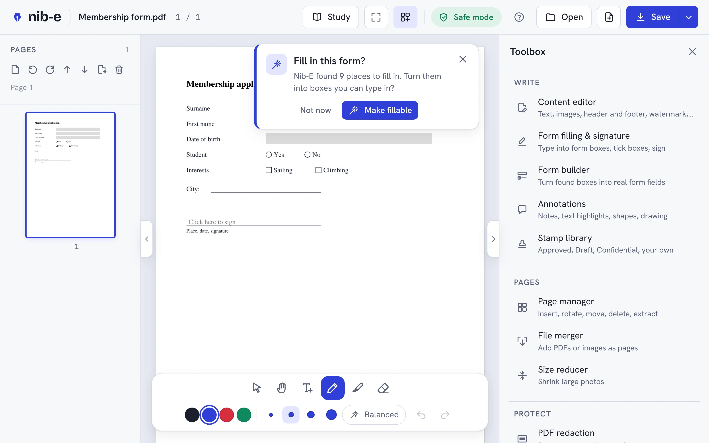

A PDF editor that keeps your files to yourself.
Read, fill, sign, draw on, redact and organise PDFs right in your browser. Nothing is uploaded. No account, no tracking, no AI.
Works in Chrome, Edge, Firefox and Safari, also on phones and tablets · Or install the desktop app for Windows, macOS and Linux.

Private by design
Your PDFs never leave your computer.
Most online PDF tools upload your documents to their servers. Nib-E does all the work inside your browser, so contracts, IDs and exam papers stay with you.
Network: none
Opening, editing and saving happen on your device. The desktop app has no internet permission at all, and the web version is blocked from connecting anywhere once loaded.
No account, no tracking, no AI
Nothing about you or your files is collected. No AI service ever sees your text.
Safe mode
Scripts inside PDFs never run and links can't open anything by themselves. Nib-E shows what it blocked.
What it does
Everyday PDF tools, without the subscription.
- Fill any formEven forms without form fields: Nib-E finds the boxes, lines and tick boxes and asks if you want to fill them. Text matches the form's font.
- SignDraw your signature once, place it anywhere, keep it on this device if you like.
- Write like on paperPen and highlighter with stylus pressure and palm rejection. Choose how much your writing is smoothed: precise for handwriting, smooth for diagrams.
- Study modeYour PDF beside a lined, grid or blank notebook. Notes are kept as you write and come back, at the page where you stopped, when you open the book again. The book file stays untouched unless you choose otherwise.
- Annotations and stampsSticky notes, highlights, shapes, ready-made stamps, or design your own stamp and reuse it.
- Redaction that really removesText under the box is deleted and picture pixels erased. Nib-E checks the result before you save.
- Pages and filesInsert, rotate, reorder, delete and extract pages. Merge PDFs, reduce the file size, lock with a password, export pages as images.
- Several files at onceEach PDF opens in its own tab. Save writes back to the file you opened, the earlier version can be restored, and unsaved work survives a crash.


Desktop app
Install Nib-E. It never goes online.
Same Nib-E, as a normal app: opens PDFs from your file manager (“Open with Nib-E”), saves straight back to the file, and has no permission to use the internet. Free, no account.
Windows
Signed by Microsoft: no warning, and updates install by themselves.
Microsoft Store: on its way. Until then, use the download below.
Or download the installer from GitHub
Download Nib-E_…_x64-setup.exe (no admin rights needed).
First start: a blue window “Windows protected your PC” appears, because this installer is not signed yet. Two clicks:
macOS
Download Nib-E_…_universal.dmg (Apple silicon and Intel).
First start: macOS says Nib-E cannot be opened. Open System Settings → Privacy & Security, scroll down, click Open Anyway.
Linux
Download the .AppImage (any distribution) or the .deb (Ubuntu, Debian).
Make the AppImage executable (right-click → Properties → Allow executing), then double-click it.
Why the warnings? The GitHub installers are not signed with a paid certificate yet; the Microsoft Store version is signed by Microsoft and has no warning. Every installer is built openly from this source code by GitHub. Nib-E never checks for updates by itself: the Store updates its version, and for the others you download a newer version here and install it over the old one (settings and study notes are kept). Prefer no install at all? Download Nib-E.html, a single file that opens in your browser and works offline.
Feedback
Something odd? Tell us.
Try Nib-E with your own PDFs: forms, lecture slides, scans, long reports. Every report helps.
- Open Nib-E and use it like you normally use a PDF reader.
- Something odd? Note what you did and which browser you use.
- Tell us in the feedback form (no account needed), or use Help → Send feedback in Nib-E. Please don't attach private documents.